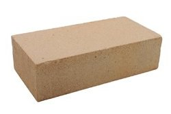

¿Ya tienes una cuenta? registrate o inicia sesión
Bloque Kali
$13.00c/u
Solo aplica el precio por mayoreo
ComprarEn caso de requerir compras menores a 2,000 piezas Contactanos
Descripción del producto
Es un bloque elabaroda a base de materiales reutilizados y naturales los cuales son:
Paja
tierra
Caliche
cenizas
las dimensiones son 24 × 11,5 × 5,25 / 7 / 3,5 cm (cada dimensión es dos veces la inmediatamente menor,
más 1 cm de junta) y el formato de dimensiones 29 × 14 × 5,2 / 7,5 / 6 cm, y los más normalizados
que miden 25 × 12 × 5 cm.
Actúa como Filtro mejorando la calidad del aire en el interior de la contrucción
Fáil de construir.
Uso de materiales locales.
poca inversión en materiales de soporte.
no lleva concreto.
el proceso de fabricación es facil y sencillo.
uso de herramientas sencillas.